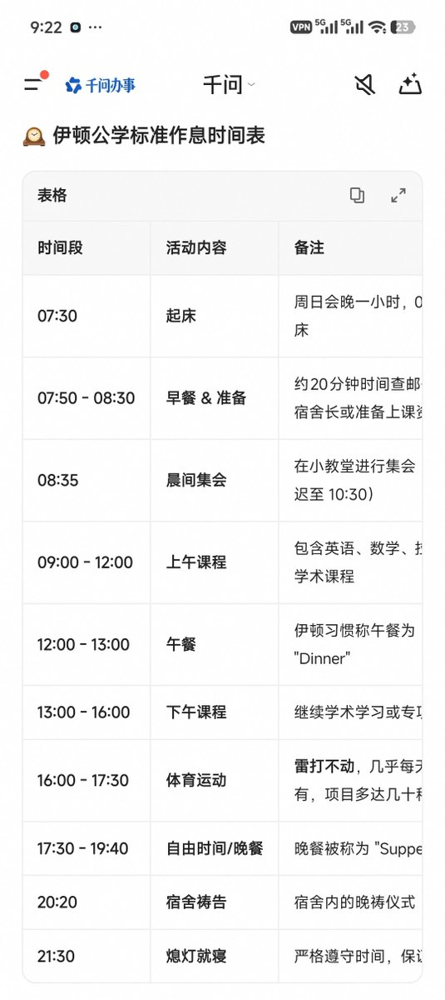

首先这人说对了一半，据我所知南方省份确实有几所所谓的省重点高中时没有这种变态作息并且还有空给人耍的，甚至还有一所学校模仿隔壁211作息直接四点下课并且没有晚自习。据说连清北宣讲团来都被这个雷霆作息震惊了。
但是首先这种超顶尖院校如果正常发挥也就一本和中末流211之间，当然对于中考全市几百名内的进来确实是耻辱，对他们的家长也是耻辱，所以这个所谓的没有朝五晚十一的校内作息实际上只是改成学校老师开的私人补习班。
另外我觉得如果这种智商的如果真有个梯子翻墙不说刷推上那些讲ai的，但凡看看b站的话也不至于说用个阿里千问这种半智障的东西来辅助说明。

但是首先这种超顶尖院校如果正常发挥也就一本和中末流211之间，当然对于中考全市几百名内的进来确实是耻辱，对他们的家长也是耻辱，所以这个所谓的没有朝五晚十一的校内作息实际上只是改成学校老师开的私人补习班。
另外我觉得如果这种智商的如果真有个梯子翻墙不说刷推上那些讲ai的，但凡看看b站的话也不至于说用个阿里千问这种半智障的东西来辅助说明。

@hoshinofujivy 你去了解一下例如伊顿公学之类的贵族学校的情况呢？还有，我高中（省重点）的时候也没有朝5晚11哈，早8晚10哈。每周还有社团活动的时间。你不代表所有人。你不把自己当人别带上我们。 https://t.co/P9xYMkTS4A